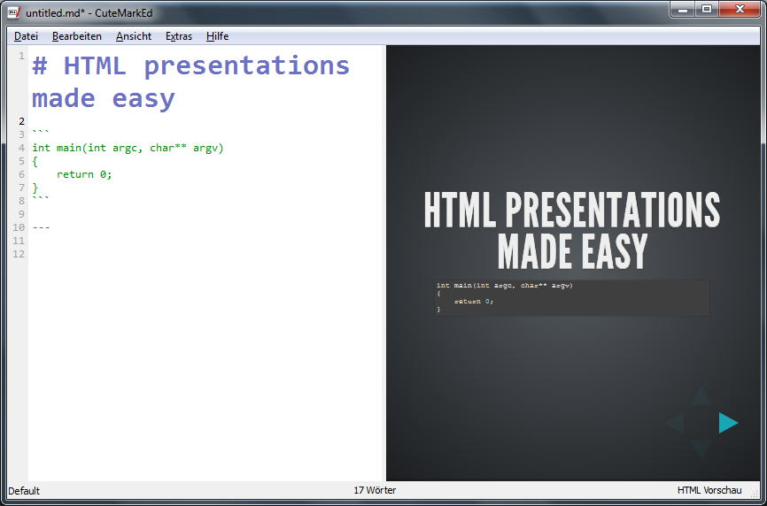

CuteMarkEd
A Markdown editor with live HTML preview
DESCRIPTION
A Qt-based, free and open source Markdown editor with live HTML preview, math expressions, code and markdown syntax highlighting. See the features page for more information.

DOWNLOAD
Sources
MS Windows (Installer)
MS Windows (ZIP file)
OpenSUSE 13.1 (RPM)
Fedora 20 (RPM)
Fedora 21 (RPM)
INSTALLATION
- Download the ZIP file
- Create a new directory at any place and copy the ZIP file to it
- Unzip the archive
NEWS
Minor Release 0.10.2 (March 7th, 2015)
NEWAdded Indonesian translation created by bedouin.NEWAdded Danish translation created by mljjlm.
IMPROVEDUpdated Greek translation.IMPROVEDUpdated Chinese translation.
FIXEDCopy & Paste problems on Windows (#161, #203).FIXEDRestore fullscreen Mode after startup (#164).FIXEDBuild on Fedora with both Qt4 and Qt5 installed (#165).FIXEDReplaced generic editor icon with own icon on Linux.
Minor Release 0.10.1 (August 24th, 2014)
The 0.10.1 release is a Linux only and there won't be packages for Windows. This release fixes some problems on Linux and hopefully makes the packaging for Linux easier.
IMPROVEDAdded support for dictionaries installed by the package system.
FIXEDUser snippets and user dictionaries are now saved to disk.FIXEDApplication binary is now installed to /usr/binFIXEDLink to system installed hoedown library
Major Release 0.10.0 (July 23rd, 2014)
The 0.10.0 release offers support to create presentations. The feature is still experimental and needs more work. Your feedback is very appreciated.

NEWAdded (experimental) support to create presentations using reveal.js (#122)NEWAdded a file explorer view which allows to easily switch between multiple documents (#79)NEWAdded context menu item to copy preview content as HTML (#133)NEWWindows only: Added support for showing recent files in taskbar jump list (#145)
IMPROVEDUpdated the Qt library to version 5.2 (#145)
DEPENDENCIES
- Qt 5.2 (LGPL v2.1)
- Discount 2.1.7 (3-clause BSD)
- hoedown 2.0.0 (ISC)
- PEG Markdown Highlight (MIT License)
- hunspell 1.3.2 (LGPL v2.1)